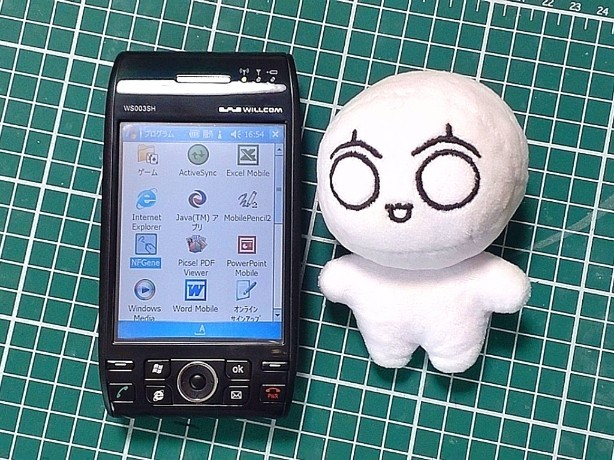
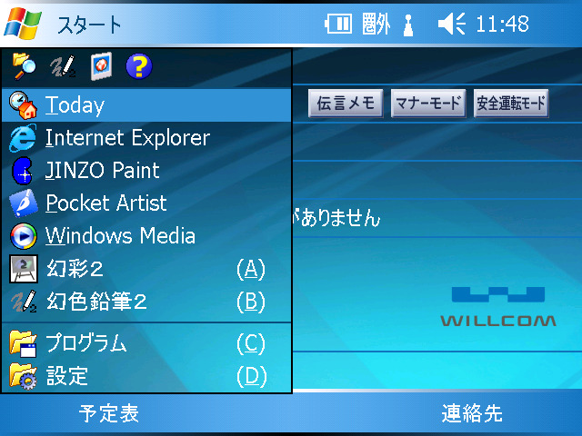
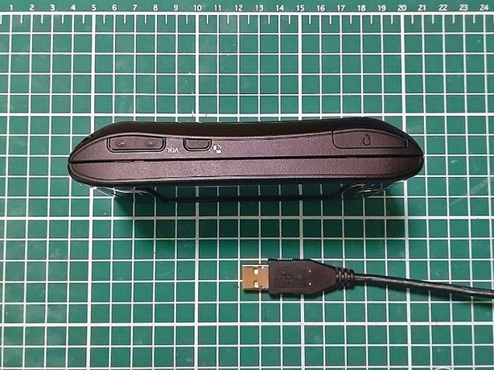
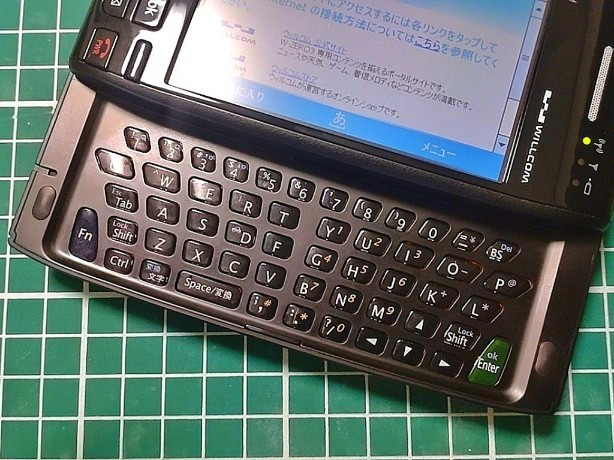
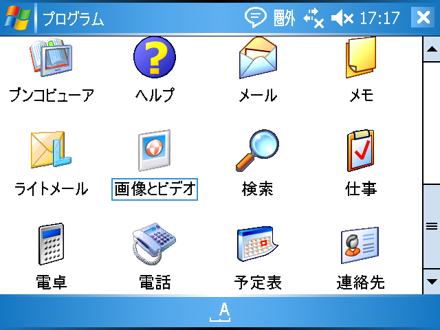
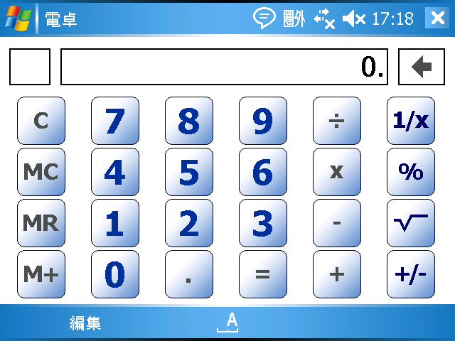
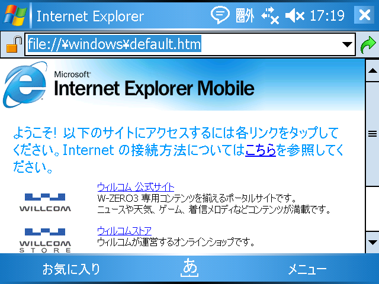
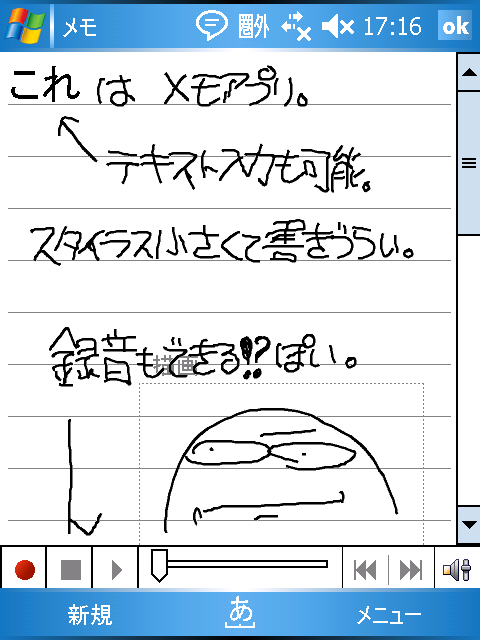
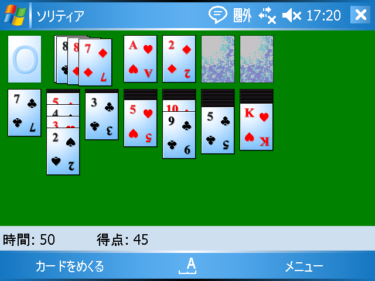

PDAを買った話
PDAを買った話
（この記事は5月の話です）

めちゃくちゃ気になっていたPDAのひとつ、ウィルコム社の
W-ZERO3をなんと新品で買えた。大興奮が止まらないので、セットアップの事からひたすら書く。
単刀直入に言うと、「ケータイ時代とスマホ時代の間の時代に流通していた、PCっぽい事ができる携帯デバイス」 のこと。
現在流通してるスマートフォンとは程遠い見た目＆スペックだが、日本産スマートフォンの歩みはW-ZERO3から始まったといっても過言じゃないらしい。
Y2Kガジェット好きじゃない限り、少なくとも私と同世代の人はPDAなんか知らないはずだ。
この端末には「Windows Mobile」という、かつてMicrosoft社がモバイル向けに開発してたWindowsの派生OSが入っている。なので携帯とPCの間のようなUIをしており、本当に不思議なマシンである。もはや化石だ…。

▲スタートメニューがあるのでデスクトップと呼びたくなるが、これは「待ち受け」である。
さて、W-ZERO3だが、分厚いし、電池持ちが悪いし、処理も遅いしで、今では考えられないくらい不便なデバイスだ。だが、単調でのっぺりとしたフラットデザインに飽き飽きした私からしてみれば、夢のようなマシンなのである。 物理キーに加え物理キーボードまで搭載されており、専用スタイラスペンもある。

▲厚さがほぼ3センチもある。小さい鞄に入れると邪魔だった。

▲物理キーボード付きのスマホはずっと私の憧れなのだ。
情報機器としての役目を終えていようが、こういうガジェットが手元で動いているのをどうしても見てみたかった。しかし買ったとしても用途が思い浮かばず、購入する気にならないままずっと過ごしていた。
今回、急に購入した理由は、
かつてPDA端末で絵を描いていたオタクが存在していた、と知ったからである。
エー!!絵が描けるの？ここ驚くところですよ。
WikipediaでPDAの情報収集をしていたのだが、「モバ絵」という記事が出てきた。スマホの小さい画面で頑張って絵を描いているオタクが沢山いるように、かつてはPDAのもっと小さい画面でもお絵描きを試みたオタクが結構いたんだそう。
しかも、PDAにプリインストールされてる手書きメモアプリでは満足できず、有志によってペイントソフトが沢山開発されてる。これは
マゾヒストお絵描き野郎（低機能なペイントソフトで本気絵を描きたくなる精神疾患の人）として、避けては通れない道だ！
モバ絵 (もばえ)とは【ピクシブ百科事典】モバ絵 - Wikipedia
本体の付属品にインストールCDが含まれてたよ。時代だねえ。
さて、Microsoft Storeもクソもない時代のレトロ・マシンゆえ、ペイントソフトを自力で探しに行き、自力でインストールしなければならない。しかし！こんなレトロマシンを現在のインターネットに繋ぐのはかなり抵抗があるため、可能ならUSB経由でのインストールで済ませたいところだ。
しかし！このインストールCDで専用ソフト（ActiveSync）をPCに入れないと、PDAとはUSB経由でのファイルのやり取りができない。試しに単純にUSBでPDAをPCにつないでみたが、お互い全く認識してくれない。そりゃそうだ。片方はWin11で、もう片方は20年前のOSだ。
というわけで、インストールCDをPCに突っ込んでセットアップウィザードを起動するも、エラー発生。Windows11はこんな古いソフトには対応してなかった！期待した私が悪かった。
仮想マシン
インストールCDは、古いOSじゃないと使い物にならない事が分かったので、仮想マシンでWindowsXP環境を作ることにした。
でもそんなのやったことないよー。
WindowsXPはずっと人気なOSゆえ、導入手順を書いているブログはいっぱい見つかるのだが、3時間ほど苦戦してしまった。ようやく動いて一安心。
久しぶりにWindowsXPを触って感動したので、その詳細は別記事にしようと思う。色々吹き飛ばしてしまった際に、同じ手順で再構築できるように備忘録も兼ねてね。
インストールCDくんもすんなり言うこと聞いてくれたので、これでPDAとPCでのファイルのやり取りが行えるようになった！とんでもねえ手間だ……
▲インターネットに繋ぐような愚かなことはしない。
とりあえずW-ZERO3をいろいろ弄ってみて、当時のガジェットがもつ空気を楽しんでみる。

▲これはアプリ一覧。アイコンが古めかしい。

▲これは電卓。グラデーションのせいで非常に安っぽい。

▲モバイル向けのInternet Explorerもかつて存在していたようだ。

▲消しゴムすらないメモアプリ。画面が小さいのでうごメモで書くような操作感。

▲ソリティアが最初からインストールされている。こういう遊び心が好きだ。
PDA向けのペイントソフトの紹介は別の記事で。
2026/05/15